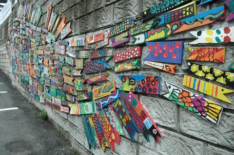

韩国·龙平 · 2013.12.14 – 2013.12.18
韩国龙平FunSki：不能错过的滑雪庆典
14年前去韩国自然恬静的江原道，第一印象非常好！2001年的《冬季恋歌》让江原道尤其是龙平滑雪场成为热点，时隔许久再度前往初体验Fun Ski度假项目………
220 张照片 →
尼泊尔 · 2013.10.24 – 2014.10.18
行摄匆匆尼泊尔：走进净土感悟心动……
这张不是我拍的，早上天还没亮就在机场集合了，难得有个自我的旅行，第一次走进尼泊尔，和几个熟人一起………
127 张照片 →
内蒙古·元上都 · 2013.08.17 – 2013.08.18
元上都：上都之北方有孤城
野花开满了坡 掩了残垣 闪电河畔 是谁正迎面而来 铁骑向南风向北 吹散 金莲川上的可汗 就在正散去的瞬间 马背上的男人回头一望 深情啊 铁骑也带了花香 这个瞬间凝了好多年 孤城，目光 是什么在心中荡漾 青青的草浪…
11 张照片 →
邮轮·航行者号 · 2013.05.29 – 2013.05.30
大邮轮第一次，我的皇家加勒比海洋航行者号首航
20 张照片 →
韩国·釜山 · 2013.05.29
釜山的圣托里尼：甘川文化村亚洲最美的村庄
韩国釜山的甘川文化村庄素有“釜山的圣托里尼”之称，2012年11月27日在日本福冈举行的亚洲都市景观奖的颁奖仪式上，甘川文化村庄被选为亚洲最美丽的村庄……这里曾经是20世纪50年代韩国战争后难民避难於此地,后来在釜山“胡同艺术工程”的推动下…
13 张照片 →
重庆·长寿 · 2013.04.26
31年后重访长寿县
14 张照片 →
西藏·拉萨 · 2013.02.14 – 2013.02.15